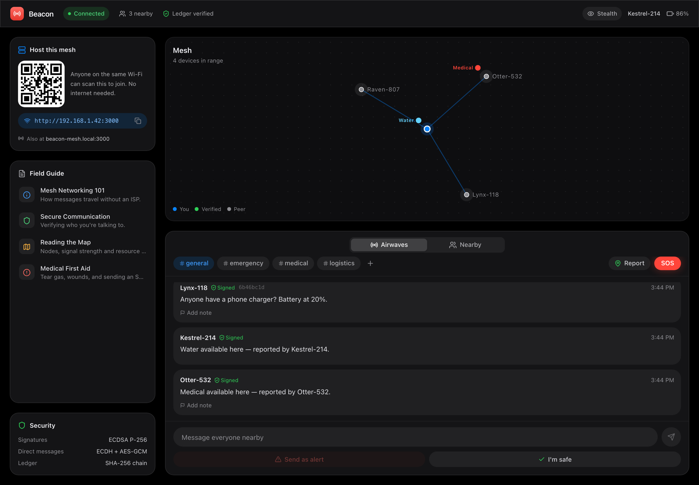
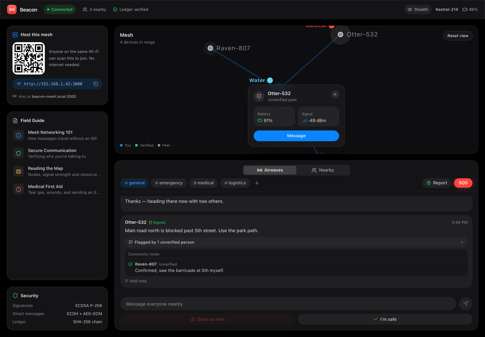
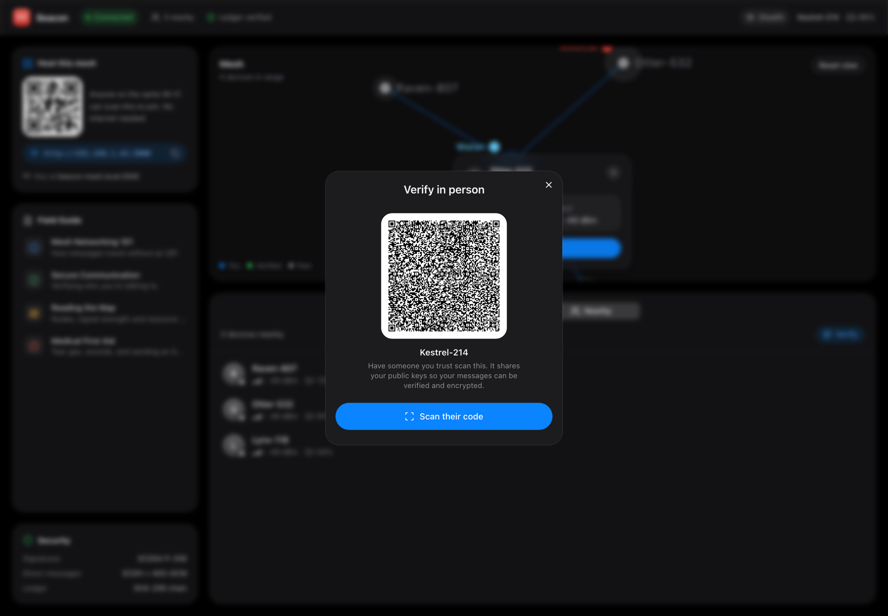
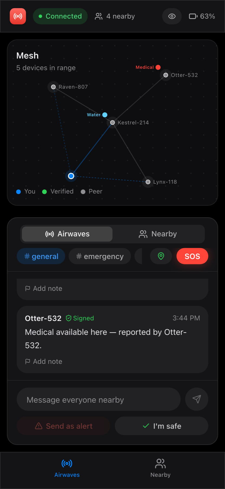

Offline emergency messaging
One device hosts on Wi-Fi or a hotspot. Everyone nearby joins from a browser. Messages travel device to device — no internet, no accounts, no app store.

Everything you need to coordinate nearby, and nothing that depends on a cell tower.
Talk in #general, #medical or your own channels. One tap sends a signed SOS to everyone.
See who's in range and where people have found water, food, medical help or shelter.
Verify people in person with a QR code. Community notes only count votes from verified peers.
Run Beacon on a laptop connected to any Wi-Fi or hotspot. It shows a QR code and appears as beacon-mesh.local.
Others scan the code and the app loads in their browser. It's a PWA, so it stays cached for next time.
Devices open WebRTC channels to each other. If the host drops, those links keep working, and missed messages sync on reconnect.

The server only introduces devices. It never stores messages, and it can't read direct ones.


Requires Node 18 or later.
# clone and start the host git clone https://github.com/anushka-naik/TMD-meshAlert.git cd TMD-meshAlert npm install npm run dev # then open the printed LAN address on other devices